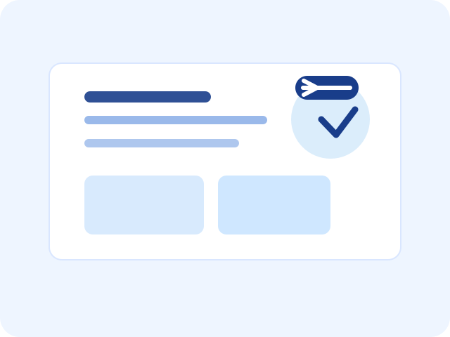

Technical Writer | Technical Manuals & Structured Documentation
Creating clear, usable documentation for complex digital products.
I help teams turn technical complexity into practical, user-friendly guidance through documentation strategy, process writing, knowledge bases, and structured authoring.
- 3.7+years in technical writing
- HealthcareSaaS documentation experience
- Document360portal and knowledge base work
